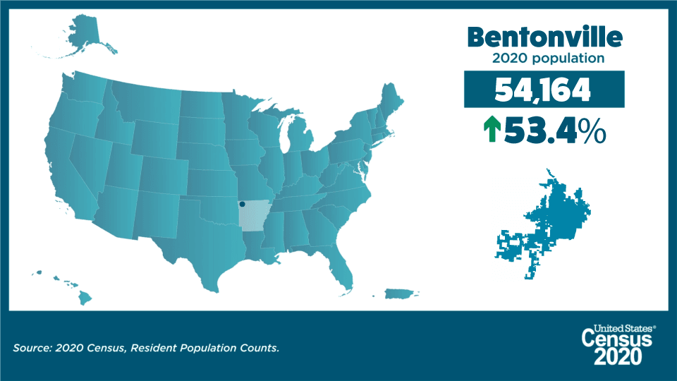
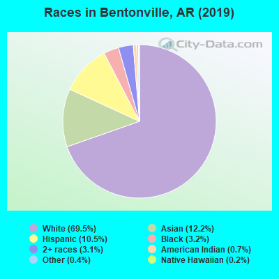

What Makes Bentonville Unique
Fun Fact:
Originally known as Osage, from the Osage Indians who had lived there prior, Bentonville had it’s name changed in 1843. The Settlers named the area after Thomas Hart Benton, a Missouri politician.
Bentonville, with its beautiful scenery in the Ozark and the quaint feel of a countryside would feel to many like an inconsequential town, but nothing could be further than the truth. In fact, Bentonville is home to one of the largest corporations in the world. Sam Walton started the first Walmart grocery store in Bentonville, Arkansas, which would later become the largest factor to the community’s exponential growth in the generations to come.


Number of Visits: